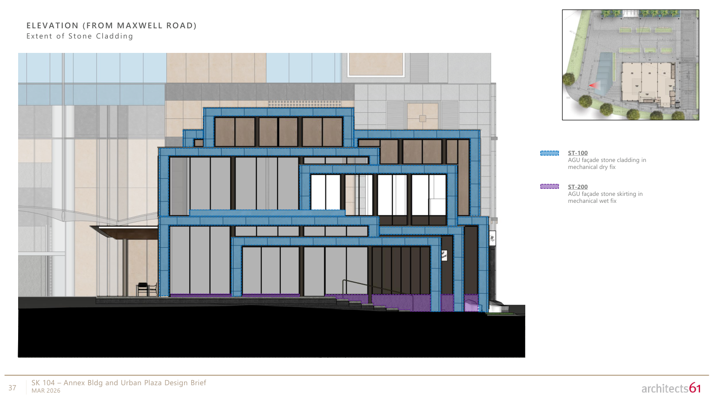

WORK IN PROGRESS · EP. 1 · NOVEMBER 2026
The drawing is flat.
The façade isn't.
Why does the same stone keep coming back a third short?
An agent can trace the stone around a window and still miss the surfaces facing sideways. We follow one recurring shortfall to ask what expert guidance changes—and what the drawings still need to establish.
00 / A BUILDING BECOMES A TABLE
What is the agent being asked to do?
Contractors need a common description of the work before they can price it. Our agent handles one part of that preparation: quantity takeoff, measuring façade items from drawings and recording them in a bill of quantities (BOQ).
One building. Different things to count.
- Glass
- Area in square metres
- A trim
- Length in metres
- Doors
- Number of units
Before comparing quantities, we have to agree on what each item includes. Does “stone area” mean the front face alone, or the sides and returns too? Measurement rules define that boundary, much as annotation guidelines define what a label should cover.
What the agent receives and delivers
Task + 277 pages
Drawings, dimensions, materials, and specifications.
Reference quantities withheldIdentify → measure → check
A deterministic PDF tool can measure polygons. The agent must decide what those polygons mean.
One workbook + two records
Detailed takeoff, machine-readable quantities, and unresolved assumptions.
See the three filenames
facade_quantity_takeoff.xlsx
facade_quantity_summary.json
assumptions_and_clarifications.jsonWhere quantity takeoff fits in a tender
A design becomes a common package of drawings, specifications, and terms. Quantities help bidders price that package. Clarifications then resolve ambiguous scope before bids are evaluated and a contract is awarded. This episode covers the measurement step.
01 / A SHORTFALL THAT KEEPS RETURNING
Does another run change the answer?
Sol measured the stone three times. The shortfall barely moved. Then we gave all three models a shared sheet digest—a guide to the drawing’s vector regions. Their stone estimates converged below the reference.
Repeatability tells us the answer is stable. It does not tell us whether the same surfaces were counted as in the reference.
Same stone. Two checks.
3.1 · STONE CLADDINGLook at the distance between the dots, then their distance from zero.
Switch inputs: do the six quantities converge on each other, or on the reference?
Put the stone in context: six rows from the baseline
These six selected rows are a reading aid; all 26 rows are in Episode notes. The stone row also contains an overestimate.
The next question is practical: what would an expert tell the agent to measure differently?
02 / EXPERTISE HAS TO BECOME AN ACTION
What does “measure the surface” actually mean?
A façade specialist, through the project advisor, clarified seven measurement conventions. We turned that advice into instructions: where to look, which dimensions to combine, and what to count once.
For stone, “measure the unfolded surface” is not enough. The agent also needs to find the return depth in a plan, section, or detail.
A · Measure the developed area
FROM ADVICE TO ACTIONGold shows the sides and returns that an area rule may include. Their depth still has to come from a drawing detail.
Six other rules: units, glass, geometry, trims, doors, scope
Astra’s repeated runs moved closer to the reference after the operational rules. Across all six configurations, coverage increased, but large misses remained common. The row-by-row breakdown keeps improvements and regressions visible.
Astra without skill: three runs on each side
How is the composite calculated?
100 × coverage0.4 × precision-at-25%0.6. Coverage is listed reference rows / 26. Precision-at-25% uses comparable rows as its denominator. The alternative view shows within-25% counts over all 26 rows. Neither is a certification of construction quantities.
03 / READING IS NOT APPLYING
Where can we see a rule change the measurement?
For glass, the selected Astra expert run changed the boundary from colored panes to the outer frame and restored uncolored door openings. Toggle the same opening below to see the distinction.
The glass calculation changes in the visible record. The stone calculation still uses front faces, leaving the original question open.
Glass: panes → framed opening
ASTRA · SELECTED RUN PAIRIllustrative opening, not traced dimensions.
Read the recorded message and paired Astra steps
04 / THE MISSING THIRD
Could the missing stone be facing sideways?
Return to the surround from the opening. The front-area remeasurement is close to Astra’s quantity. Could the sides account for the gap to the reference? Drag the assumed depth.
Give the same surround some depth
NOT A MEASURED DEPTHSame schematic as Fig. 1; gold surfaces follow your assumed depth.
Inspect the drawing and the assumptions behind the numbers

The separate remeasurement gives about 239 m² across pages 38, 42, 46, and 50. Their displayed areas—75, 66, 41, and 58 m²—are rounded; the aggregate is reported separately.
The 451 m assumes half of 902 m of traced boundaries correspond to returns; individual edges have not been classified. The 350 m² is a supplied reference, not a derivation reconstructed here. Astra’s separate agent quantities remain in the full matrix.
The next step is to locate those surfaces in the drawings and confirm the depth with the specialist. Then freeze the rules and try an unseen tender.
A better ruler helps.
First, agree on what it should measure.
Source: stone hypothesis and open questions · Reference provenance
EPISODE NOTES
Now explore the evidence.
The story followed one quantity. These records retain the other rows, conditions, and unresolved cases.
Explore all 26 rows × 6 configurations
26 reference items × 6 configurations
Download snapshot ↓What differs between the conditions?
Baseline: the curated 12-PDF package. Sheet digest: adds page titles, material codes, and vector-color geometry without metre conversion. Raw folder: 331 files / 3,102 pages, revised documents, and a longer budget. Expert rules: adds operational measurement guidance; Muse also uses draft-first continuation. The raw-folder comparison therefore mixes volume, revisions, and budget.
Models: GPT-5.6 Sol and GPT-6 Astra via Codex CLI; Muse Spark 1.3 via OpenCode / OpenRouter. The optional skill supplies measurement guidance. Expert rules are a separate input condition, available to both skill groups.
Which rows improved—and which got worse?
Across 156 cells: within 30%, 59 → 74; missing, 33 → 22; more than 30% away, 47 → 57. On the 21 targeted rows, within 30% rose 38 → 56; the other five fell 21 → 18.
Inspect the changes by rule
| Item | Baseline | + Expert rules | Change |
|---|
Limits and unresolved questions
- Reference: one professional BOQ, not an independently reconciled estimate. Nineteen of 26 quantities are typed values without a calculation trail. Reference proximity is not verified engineering accuracy.
- Comparison: rules were revised with this reference in view. Only Astra without skill has matched final-condition repeats. Targeted-row improvements do not isolate causality or demonstrate generalization.
- Inputs: the raw-folder comparison changes document volume, revisions, and budget; Muse’s expert condition also changes continuation. Conditions branch from baseline, rather than accumulating.
- Measurement: repeatability and cross-model agreement do not resolve which surfaces or units the reference includes. The return-depth slider is a hypothesis, not recovered geometry.
- Rule translation: early door guidance weakened counting when pricing advice was translated into an area rule. The final guidance restored counts by type. Expert advice still needs careful operationalization.
- Still open: steel panels & frames (2.2) stay outside 30% in every displayed run, including a large baseline overestimate. Allocation of mullions/transoms, column faces, and automatic-door types needs clarification.
Project timeline · September 27 → November 4
- Sep 27: pilot runs delivered files; measurement evidence and verifier errors needed review.
- Oct 1–7: a 26-row reference arrived. A template-filled variant exposed reference structure; the task was rebuilt with reference alignment kept on the scoring side.
- Oct 8: repeat runs exposed recurring shortfalls; deterministic PDF measurement and optional skill guidance were introduced.
- Oct 14–15: sheet-digest and raw-folder comparisons separated some information-access issues from interpretation issues.
- Nov 1–4: specialist replies became operational rules, followed by repeats and row-level / trajectory analysis.
This episode covers Tender 1 through the final expert-rule analysis. No new agent experiment was run for this article.
Evidence manifest and file hashes ↓ · Article scope and sources · Private repository ↗
The research repository remains private. This public snapshot contains the displayed evidence and drawings; it is not the full experiment corpus.